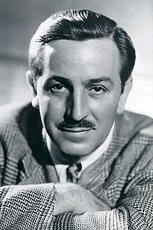

Walt Disney, el que lo empezó todo

Walt Disney, nació el 15 de diciembre de 1966. Se le conoce por muchas cosas:
empresario, guinista, actor de voz, productor de cine estadounidense,
pero todo el mundo le conoce como animador.
Tras su despido, junto con su hermano en la década de 1920, decidieron abrir
su propio estudio que lo llamaronn Iwerks-Disney Commercial Arts. Algunos años
más tarde, entre los años 20 y 30, Walt creó a su primer personaje famoso,
que se convertiría en uno de los personajes más famosos del mundo en la actualidad,
MICKEY MOUSE.
Vida Academico
- McKinley High School
- Instituto de Arte de Kansas
Vida Profesional
- Enero 1920, Walt Disney junto con su hermano, abrieron su propio negocio, Iwerks-Disney Commercial Artits
- En 1923, creacion de Walt Disney Company (Disney Brother Studio) junto con su hermano Roy O. Disney
- Mayo 1928, la primera aparicion de Mickey y Minnie Mouse en el cortometraje Plane Crazy
- Noviembre 1928, Primera producción de un dibujo animado con sonido sincronizado, Steamboat Willie
- En 1932, introducción de la primera pelicula animada con color, Flower and Trees
- En 1937, estreno del primer largometraje de animación, Blancanieves y los siete enanitos
- En 1940, Disney inovo con la camara multiplano, que añadio profundidad y dimension en peliculas como Fantasia
- Entre 1942-1945, produjeron varias peliculas de propaganda en tiempos de guerras
- En 1954, lanzamiento de Mickey Mouse Club House en television.
- En 1961, Walt Disney jugo en rol importante para la creación de CalArts, una universidad privada en Santa Clarita, California.
- A lo largo de su carrerra, Walt Disney fue nominado 59 veces, gano 22 oscars y ostenta el records de más Oscars ganado por una perosna.